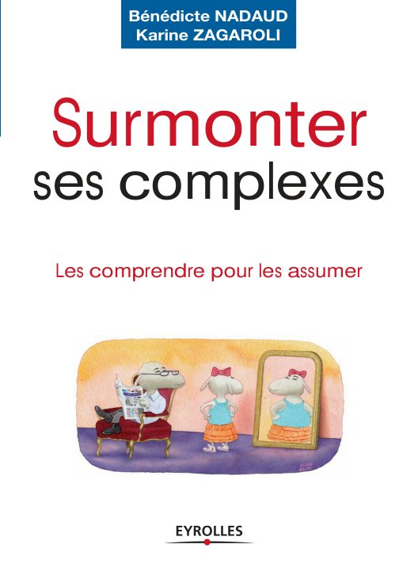

savoirs
Surmonter ses complexes : les comprendre pour les assumer

PDF non disponible en lecture publique.
Carte d’identité
- Auteur
- Bénédicte Nadaud et Karine Zagaroli
- Genre
- savoirs
- Pages PDF
- 186
Résumé du livre
Bénédicte Nadaud et Karine Zagaroli examinent la manière dont une caractéristique physique, psychologique ou sociale peut devenir un complexe. Elles distinguent les complexes subjectifs, liés à la perception de soi et au regard d’autrui, des complexes fondés sur une différence plus tangible. Elles interrogent l’influence des normes, des comparaisons et de l’histoire personnelle, puis proposent des pistes pour réduire l’emprise de ces jugements. L’objectif n’est pas de promettre une perfection impossible, mais d’apprendre à vivre avec ses particularités sans les laisser définir toute son identité.
Sections du livre · 6 repères paginés
Repères fondés sur les titres et passages du PDF original. Ce sont des extraits de navigation, pas des résumés analytiques de chaque chapitre.
01IntroductionPDF p. 12
Repère tiré du texte : Pourquoi consacrer tout un livre aux complexes ? Tout simplement parce que nous sommes nombreux, très nombreux, à en avoir. Mais les complexes, qu’est-ce que c’est ? Ils semblent bien réels, ils hantent cha- cun de nous et cependant, ils sont difficiles à définir. Peut-être parce que dire son complexe, c’est toujours une façon de révéler sa personnalité.…
Lecture PDF indisponible02I. Les complexes subjectifsPDF p. 16
Repère tiré du texte : PREMIÈRE PARTIE Les complexes subjectifs Ces petits défauts qui ont pris trop d’importance à nos yeux S U R M O N T E R S E S C O M P L E X E S 6 © Groupe Eyrolles Trop grand, trop petit, pas assez mince ! Toutes les occasions sont bonnes pour se remettre en question et s’attarder sur ces petits défauts qui empoisonnent le quotidien. Tout le monde est…
Lecture PDF indisponible03II. Les complexes rationnelsPDF p. 74
Repère tiré du texte : DEUXIÈME PARTIE Les complexes rationnels Tous les complexes visibles aux yeux des autres S U R M O N T E R S E S C O M P L E X E S 64 © Groupe Eyrolles Taches de naissance, obésité, strabisme, malformation d’un membre… Certains défauts ou handicaps sont parfaitement visibles aux yeux des autres, donnant lieu à ce que nous appellerons les complexes…
Lecture PDF indisponible04III. Les complexes de comparaisonPDF p. 128
Repère tiré du texte : TROISIÈME PARTIE Les complexes de comparaison Une place dans la société mal assumée S U R M O N T E R S E S C O M P L E X E S 118 © Groupe Eyrolles Se comparer aux autres est inévitable. Au travail, entre amis, en famille, on a besoin de savoir ce que l’autre est devenu, de voir s’il a réussi, si ses enfants sont de bons élèves, si sa maison est belle… Tout…
Lecture PDF indisponible05ConclusionPDF p. 182
Repère tiré du texte : Sacrés complexes ! Ils sont partout, chez la grande blonde comme chez la petite brune, chez le grand mince comme chez le petit musclé. De plus, ils évoluent au fil du temps ; les rencontres et les événements de la vie modifient la perception que chacun se fait de ses complexes : une aven- ture amoureuse, et aussitôt, on se sent plus séduisant. Il ne faut donc…
Lecture PDF indisponible06BibliographiePDF p. 184
Repère tiré du texte : ALLAIS Juliette, La psychogénéalogie, Eyrolles, 2007. AMADIEU Jean-François, Le poids des apparences, Odile Jacob, 2002. ANDRÉ Christophe et MUZO, Petits complexes et grosses déprimes, Seuil, 2004. ANDRÉ Christophe et LÉGERON Patrick, La peur des autres : Trac, timidité et phobie sociale, Odile Jacob, 1995. ANDRÉ Christophe et LELORD François, Comment gérer…
Lecture PDF indisponible